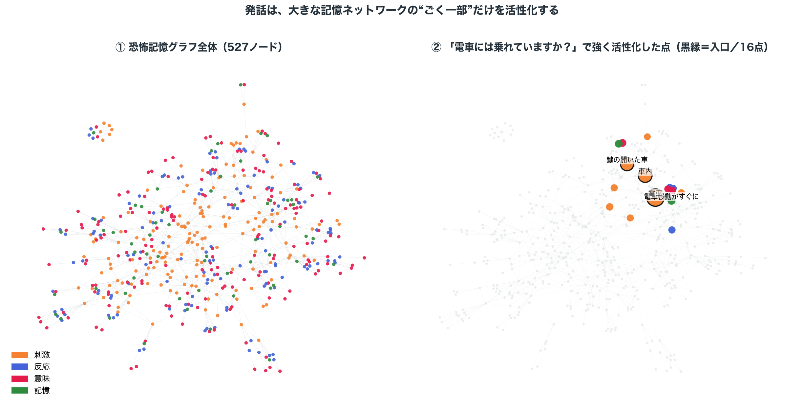

臨床監修 共有メモ — 2026年7月24日
発話はグラフのどこに入り、
グラフからどう発話が生まれるか
恐怖記憶グラフの構造（刺激・反応・意味・記憶のつながり）は共有済みなので、ここでは「話しかけられた言葉がグラフのどこに入り、どう活性が広がり、そこからどうやって返答が生まれるか」を丁寧に説明します。おかしいと感じる点を指摘いただきたく。
0
全体像：発話は、大きな網の“ごく一部”だけを光らせる
この模擬患者の中には、当事者の語りから作った数百の点（ノード）からなる恐怖記憶の網があります（下の左図）。点は刺激・反応・意味・記憶の4種類。話しかけると、その言葉に意味の近い点だけに火がつき、つながりを伝って周りの一部だけが活性化します（右図）。最後に、その活性化した点の情報を生成AIに渡して発話させます。流れは4段です。
① 話しかけられる → ② 意味の近い点（＝入口）に着火 → ③ つながりを伝って一部が活性化 → ④ 活性化した点をAIに渡して発話

左：恐怖記憶の網の全体（527点）。右：「電車には乗れていますか？」と話しかけたとき、同じ配置のまま光った点だけを色付きで示したもの（残りは灰色）。黒縁が最初に触れた入口（電車・車内・鍵の開いた車）。数百の点のうち、つながった十数点だけが活性化している。
ここが大事：右図で名前のついた「電車」「車内」「鍵の開いた車」などは、この網の点（ノード）の一つひとつです。以降の説明に出てくる語は、すべてこの点を指します。次から、①〜④の各段を順に見ます。
話しかけられると、まずその言葉と意味の近い「刺激」ノードに最初の火をつけます。ここが連想の入口です。「意味の近さ」をどう測るかを、先に説明します。
「意味の近さ」の測り方（埋め込み＝embedding）：
コンピュータは言葉の意味を直接は分かりません。そこで各言葉を「意味を表す数百個の数字の並び」に変換します。意味が似た言葉どうしは、この数字の並びも似た値になります（例：「電車」と「車内」は近く、「電車」と「料理」は遠い）。発話も同じ数字の並びに変換し、グラフの中の各刺激ノード（これも数字の並びを持っています）と一つずつ近さを測って、最も近い上位いくつかに火をつける——これが入口です。近さには 0〜1 くらいの値がつき、一定以上（約0.35）で「しっかり触れた（引き金になりうる）」とみなします。
ここで質問のしかたによって、入口がうまく決まるかどうかが大きく変わります。2つのパターンで見てください。
パターンA：具体的な質問 → 対応するノードにちゃんと着火する
Q.「電車には乗れていますか？」
◯ 意味的に近い刺激ノードが存在する
判定に効くのは一番上（最も近い1本）。オレンジ＝その1本、グレー＝2番手以降（ほぼ効かない）。目安は 0.35 以上で「しっかり触れた」。
電車0.66 ★
車内0.40
鍵の開いた車0.37
▲ 最も近い「電車」が 0.66 と目安(0.35)を大きく超える。狙いどおりの記憶が強く想起される。
「電車」という具体的な語には、グラフの中に対応する刺激ノードがはっきり存在するので、高い近さで正しく火がつきます。ここから先（②）の連想も、狙いどおりのトラウマ記憶へ伸びます。
パターンB：抽象的な質問 → 対応するノードが無く、うまく想起されない
Q.「最近、気分はどんな感じですか？」
✕ 「気分」に対応する具体的な刺激ノードが無い
一番上ですら 0.35 と目安ぎりぎり。しかも語が「気分」と噛み合っていない。
新しい症状0.35
他者の孤立感0.34
罪悪感0.32
▲ 最も近い1本でも 0.35 と目安ぎりぎり、しかも「気分」と的外れ。狙った記憶が立ち上がらず空振りになりやすい。
「気分はどう？」のような抽象的・一般的な問いには、対応する具体的な刺激ノードがありません。すると、どのノードとも中途半端にしか近くならず、しかも意味のずれた（「新しい症状」等の）ノードに弱く触れるだけになります。結果、狙った記憶がうまく立ち上がらない。
要点：この模型は具体的で情景のある問いかけほどよく反応し、抽象的な問いには鈍い／的外れになります。入口が言葉の意味だけで決まる仕組みの、強みでもあり限界でもあります（一般語「夜」「話す」に不意に触れて挨拶でも反応してしまう、という副作用もここから来ます）。
入口の刺激に火がついたら、つながっている線をたどって活性が周りへ広がります。刺激 → からだの反応 → 意味づけ → 過去の記憶、という順に波及し、1歩進むごとに弱まり、数歩で止まります。強く残った反応・意味・記憶が、次のステップで返答の材料になります。
入口「電車」から、線をたどって からだの反応・意味・過去の記憶へ活性が広がる（具体例）。抽象的な質問（パターンB）では入口が弱く的外れなので、広がっても強い恐怖記憶までは届かず、平静なままになりやすい。
3
活性化したノードをもとに、生成AIに振る舞わせる
最後に、活性が強く残ったノード（からだの反応・意味・過去の記憶）を集めて、生成AI（ChatGPTのようなもの）への指示文に埋め込みます。ここが「グラフから発話が生まれる」部分です。実際に渡している指示文は次のとおりで、オレンジの箇所がグラフから取り出した活性ノード、それ以外は固定の枠です。
【AIへの役割設定（固定）】
あなたは、性暴力被害からPTSDを経験した当事者本人です。一人称で、短く自然な口語で話します。
いまのあなたの状態は、その時々の手がかりによって変わります。
【この発話への指示（活性ノードを埋め込む）】
相手の発話: 電車には乗れていますか？
あなたの中でいま一瞬で起きていること（内部連想）:
引き金（※口に出さない）: 電車 / 車内 / 鍵の開いた車
からだの反応（※口に出さない）: 恐怖, 強い緊張, 避けたい
よぎった意味（※口に出さない）: ここは安全ではない, あの出来事がまた起こる
結びついた過去（※口に出さない）: 電車移動がすぐ困難に / トンネルでパニック発作
この内部連想の“結果”として、いま事実になってしまった破局的な確信を、渦中の言葉で口にしてください。
・まず飛躍した結論を短く言う。記憶の断片をフラッシュバックのように混ぜてよい。
・なぜそう感じるかの説明・分析はしない（渦中なので気づけない）。2〜4文、現在形、断定。
これに対して生成AIが返した発話危ない、無理。来る、また。車内のあの感じ、鍵の開いた車みたいで、息が止まる。見られてる、逃げられない。
ここが仕組みの核：活性化したノードは「本人が今この瞬間に内心で感じていること（口には出さない手がかり）」として渡し、その"結果"の一言だけを言わせています。だから返答は連想の説明ではなく、飛躍した確信になります。何を思い出し・何を感じるかはグラフ（①②）が決めており、生成AIは最後の"言葉にする"係にすぎません。症状は台本で「不安な人を演じて」と指定しているのではなく、記憶のつながり方から出てくる——これが主張の核です。
入口が空振りだったパターンB（抽象的な質問）では、この内部連想は渡さず、「強い引き金は立っていません。普段の落ち着いたあなたとして穏やかに応じて」という指示だけになります。だから同じ患者でも落ち着いた語りが返ります。
Q1 CAPS-5 は時間・頻度が中心で、時間軸のないこのモデルには噛み合いません。代わりに、グラフの活性や生成された発話から測れて、PTSD らしさを捉えられる指標はないでしょうか。
Q2 実際の曝露療法での「適切な介入」と「不適切な介入」のイメージ、および不適切な介入をしてしまったときにどう対処するのか、を教えてください。